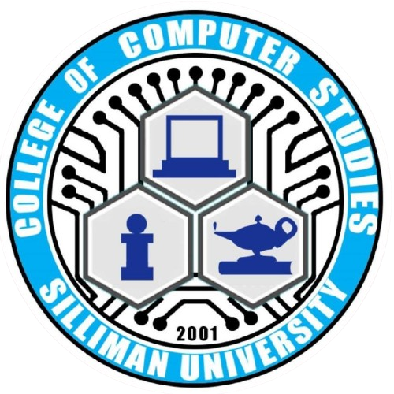
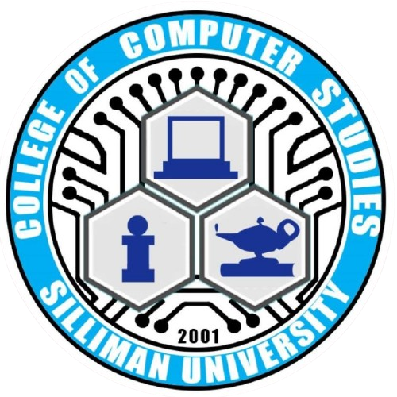

The 5 Cs
Classroom
Culture
Church
Community
Court

The 5 Cs
Classroom
Culture
Church
Community
Court


On September 29, 2024, an activity called “PaDagat: Panglimpyo sa Dagat” happened at Silliman Beach. This activity is organized by DOST SA SU. For this activity, I am just a helping participant.
At the start of the activity, we met at Silliman Beach to discuss where we should go and what sacks should be used for each type of trash, During the trash picking, we picked up all kinds of trash such as plastics, glass bottles, and cigarette butts. Surprisingly, there were a lot less trash to pick than what I was expecting, but this is a good thing because this means that most people are disposing their trash properly. This entire activity is my favorite part as I have helped the beach look much more cleaner.
Overall, this was a very meaningful activity for me. Silliman Beach is one of my favorite beaches because of its cleanliness and thanks to me and others, we have helped it look much more beautiful. I hope that more people will continue to dispose their trash properly and more people will pick up trash on Silliman Beach.
Because of this activity, I am thankful to myself and others for helping Silliman Beach.

On December 14, 2024, us GE10 takers were making white gifts to give to the orphans at Sto. Niño Orphanage. This activity takes at ATA Hall and is organized by College of Computer Studies and with help from Confederates Student Council. For this activity, I am just a participant helping in the white gift making.
During the white gift making, we were told that we should use recyclable materials to make the gifts, so our group decided to use a cardboard box for the gift and newspaper to wrap the gift. The items required for the white gift are essential items for a child such as milk, canned goods, soap, and many more. After we were done gathering the required items and wrapping the white gift, we submitted out gift to the CCS Dean’s office.
After this activity, I was happy knowing that I have helped a child. I am hoping that whoever has received our white gift will be happy about it and use those items to help them in their lives. I am also hoping that one day a loving parent will adopt those children at the orphanage.
Because of this activity, I am happy to have helped a child in need.

On November 27, 2024, the PEP Christmas Outreach was happening at SU Church. This outreach is organized by SU Guidance and Testing Division. For this event, I will be one of the participants giving the gifts.
This event is meant to give gifts to the janitors of Silliman. The items in the gift are the usual items to start a janitor’s day such as rice, coffee, and canned goods. Seeing the janitors’ smiles when I gave them their gift truly warms my heart as I do think they deserved it.
Overall, this event was very helpful for the janitors. I believe janitors deserve more respect as they are working hard and trying their best to keep the entire campus as clean as possible. I hope that these janitors can use the items we have given them so that they keep giving their all when their working.
Because of this activity, I am thankful to the janitors of Silliman University.
On November 12, 2024, a feeding program was happening for the Kindergarteners and Graders at Sibulan Central Elementary School. This activity was organized by the Friends of the Philippines Blue Coast. I am one of the people sub-organizing this program to make this program possible.
Before the program, we had to make the champorado to feed to the children later. During the program we interacted with the children, made the children play games, and most importantly fed the children champorado. My favorite part of this program was the whole thing as this was very fun to prepare and do.
Overall, this was a very wholesome program. Seeing the children and teachers have fun honestly warms my heart. I hope that these children will continue to be happy and the teachers continue to teach these children to prepare themselves for the future.
Because of this activity, I am happy for myself in sub-organizing this program.
On December 4, 2024, a donation drive happened at Bata Ng Calabnugan. This donation drive is organized by Dumaguete Asian Printers. For this donation drive, I am a part of the working committee.
The amount of pesos required for this donation drive was ₱100. After giving our donations we were able to get a tour of the place, it was very fascinating to see how the kids live there and how the workers do their job. My favorite part of this donation drive was seeing the kids and workers smile as soon as they received the donations.
Overall, I have realized how much a donation can help anyone. Bata Ng Calabnugan needed all the donations and help they could get so that they can care for the children as much as possible. I hope that one day these kids will find success in their lives and the workers continue to care for them.
Because of this activity, I am grateful to myself for being part of this donation drive.